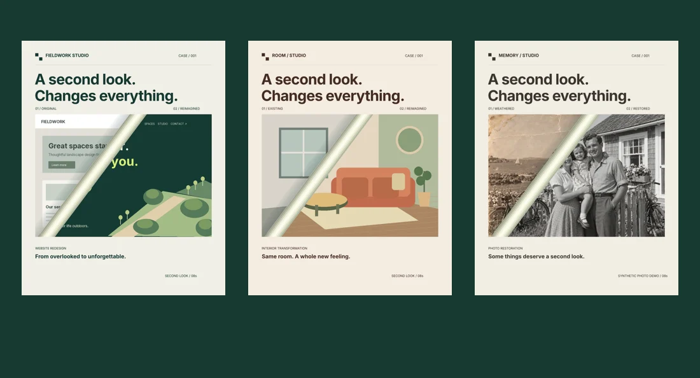
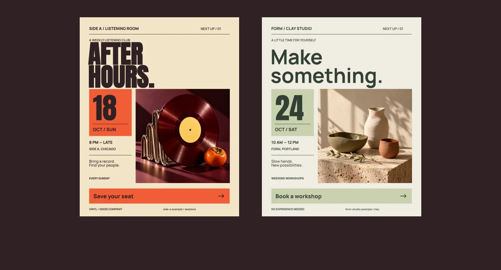
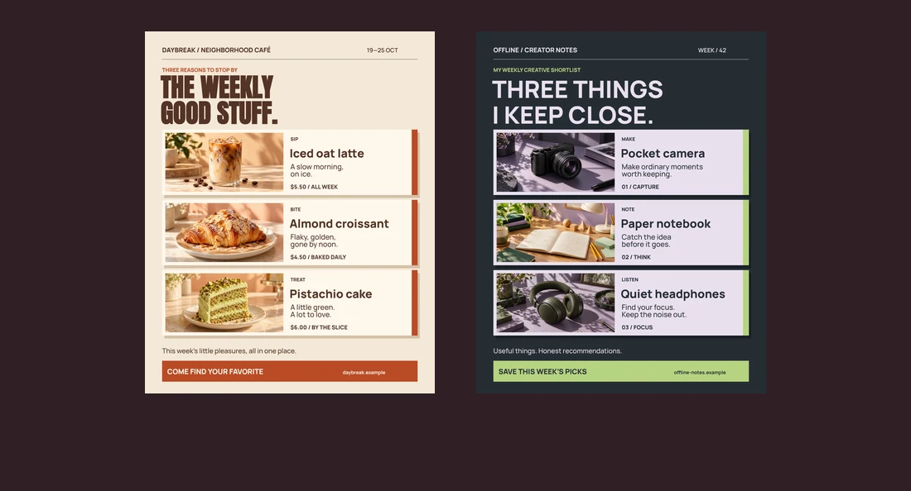
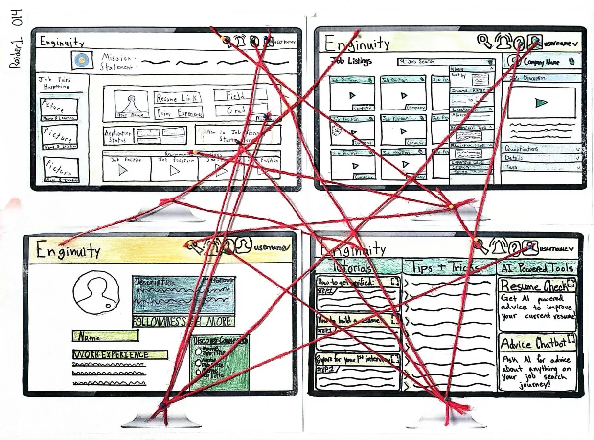
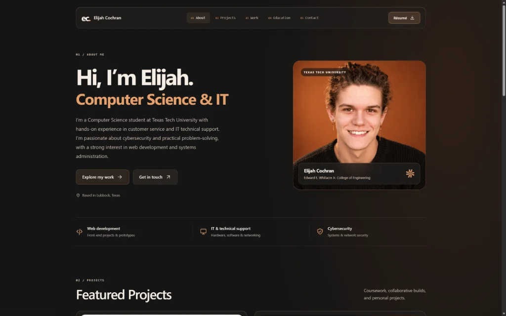

SVGator Challenge Entry01 / ABOUT ME
Hi, I’m Elijah. Computer Science & IT
I'm a Computer Science student at Texas Tech University with hands-on experience in customer service and IT technical support. I'm passionate about cybersecurity and practical problem-solving, with a strong interest in web development and systems administration.
Based in Lubbock, Texas
TEXAS TECH UNIVERSITY

Elijah Cochran
Edward E. Whitacre Jr. College of Engineering
Web developmentFront-end projects & prototypes
IT & technical supportHardware, software & networking
CybersecuritySystems & network security
02 / PROJECTS
Featured Projects
Coursework, collaborative builds,
and personal projects.

SVGator Challenge Entry
SVGator Challenge Entry SVGator Challenge Entry
SVGator Challenge Entry

School Project
Personal Project03 / SERVICES
Offered Services
Productized creative and technical services
available to book through Contra.
04 / WORK EXPERIENCE
Work Experience
Freelance creative work, IT support,
and customer service.
October 2026 - Present
Freelancer
Self-employed | Contra
August 2026 - Present
Independent Delivery Driver
Self-employed | Spark & Uber Eats
October 2024 - August 2026
ToGo | Delivery | Catering
Darden Restaurants | Olive Garden
Past
Summer of 2023 & 2024
Technology Specialist
Bushland ISD | IT Department
05 / EDUCATION
Academic Background
Computer Science coursework at Texas Tech University, dual-credit associate studies, and a strong academic foundation.
EDUCATION
2025 - 2029 · Enrolled
Bachelor's Degree in Computer Science
Texas Tech UniversityCurrently enrolled full-time in Computer Science.
2021 - 2025 · Graduated
Associate's Degree in General Studies
Amarillo Community CollegeEnrolled through and completed the Dual-Degree program. Cumulative 4-Point GPA of 3.508.
2021 - 2025 · Graduated
High School Diploma
Bushland Independent School DistrictGraduated in the top 18% of my class. Awarded Superintendent Scholar all four years. Cumulative 5-Point GPA of 4.36.
RECOMMENDATION
Elijah Cochran has established himself as an outstanding student among the graduating class of 2025…
Full recommendation letter available upon request.
06 / CONTACT
Get in Touch
Feel free to reach out regarding internship opportunities, collaborative projects, or questions.